Stockholm University · Department of Astronomy
AS5003 (Cosmology) HT26
Lecture 1 (3 Nov 2026)

Image credit: NASA
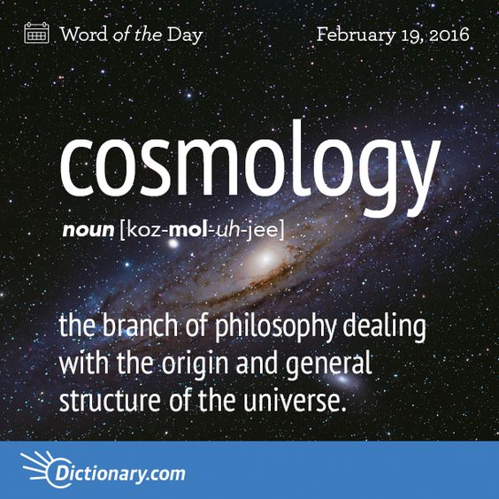
Flammarion engraving (1888), coloured by Hugo Heikenwaelder · CC BY-SA 2.5
Where do we come from?
What are we?
Where are we going?
“Cosmology grapples with these questions by describing the past, explaining the present, and predicting the future of the universe.”
Questions after Paul Gauguin · quote from B. Ryden, Introduction to Cosmology (2nd ed.), Ch. 1
Who am I?
Sambit Giri
Researcher at the Department of Astronomy
sambit.giri@astro.su.se
Email is the best way to reach me. I generally try to respond within one working day.
Office C6:3064 (AlbaNova)
Image credit: NASA
Today’s plan
- Course information, schedule, examination, etc.
- Introductions
- Fundamental Observations
Course website
Log in with SU credentials
Select tab Cosmology HT 26
Most information is found under “Modules”
Keep an eye on the announcements: I will post reminders and urgent information there.
Learning Objectives
(from course plan)
- Describe the theoretical background of modern cosmology, the main outlines of the history of the universe, and contemporary presentations of problems in cosmology
- Describe and do calculations regarding the dynamics of the universe, the energy content in different components, the cosmic microwave background, nucleosynthesis and thermodynamics in the early universe, and the inflation model
- Describe and do calculations regarding the observational methods that can be used to determine the properties of the Universe
- Show in-depth knowledge of modern research results and methods within some area of cosmology, and express this knowledge in written and oral form
Image credit: NASA / WMAP
Course Examination
- Graded homework problems (weekly, total 20% of total grade)
- Literature Project (15%). Consists of a written report and an oral presentation in class
- Written exam (65%), scheduled for January 12, 2027.
Note, each component needs a passing grade (>50%) in order to pass the course!
Homework Policy
- Problem sets due every Tuesday (except the last one) before class. Late homework not accepted.
- 6 regular sets during the term, however only best 5 will count towards your grade. (So, you can miss one without any consequences.)
- Working together is encouraged, but everyone must write up and hand in their own solutions.
Literature Assignment
- Instructions and some topic suggestions are up on canvas.
- Initial topics due end of next week - take a look, and start thinking. Goal is to have everyone set up with topics and papers selected by November 19 at the latest.
- Written report due December 15, oral presentations will be held on December 17 and 18.
On using AI
- Acceptable use: for initially researching/brainstorming topics (although definitely check the output!), and for improving text that you write (grammar/spelling, etc.)
- Not acceptable: using AI to generate original text, such as summarising your articles or writing parts of your report.
- If you use AI tools for any part of the assignment, it must be clearly stated in an acknowledgment, including how and for what parts.
- Using AI incorrectly is considered equivalent to plagiarism/cheating by the University and could be subject to disciplinary action.
Course Book
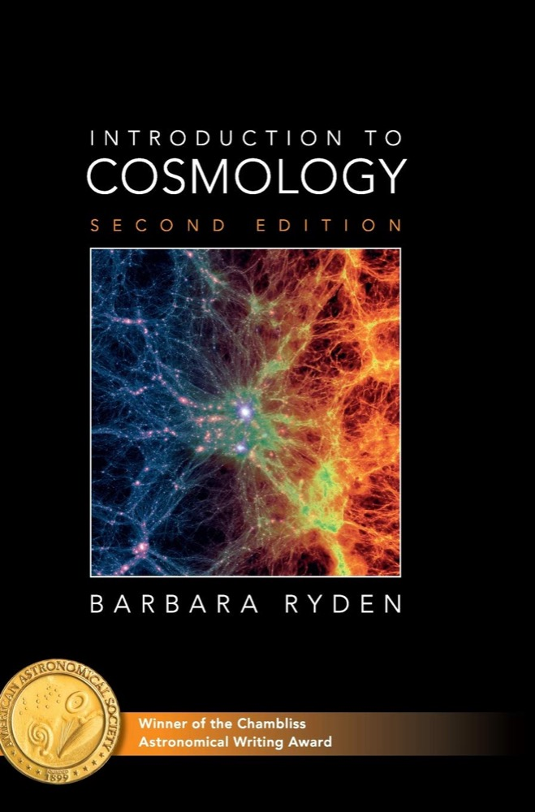
“Introduction to Cosmology”
Barbara Ryden
2nd edition
ISBN 9781107154834
Note, we will cover chapters 1-10
(not the structure formation parts)
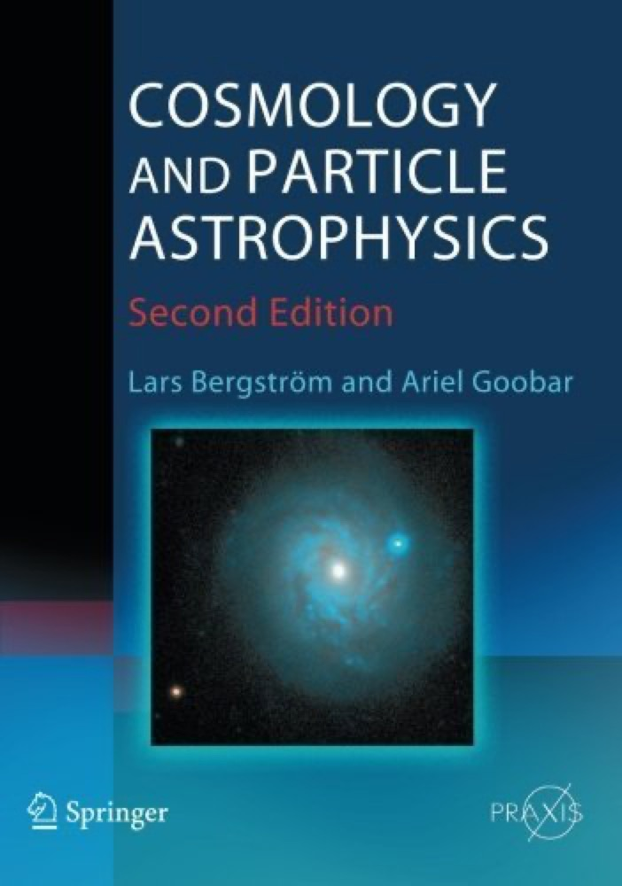
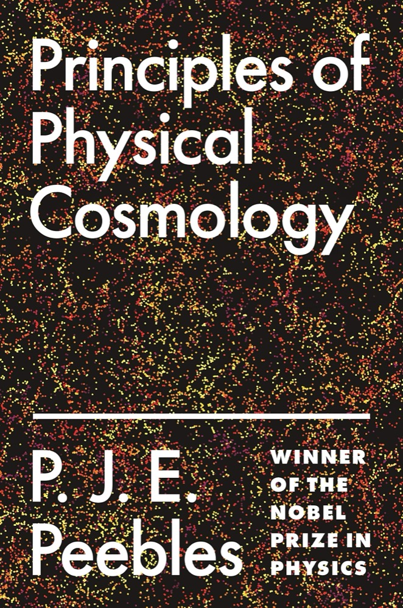
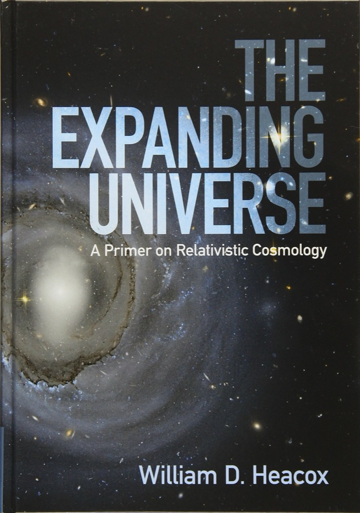
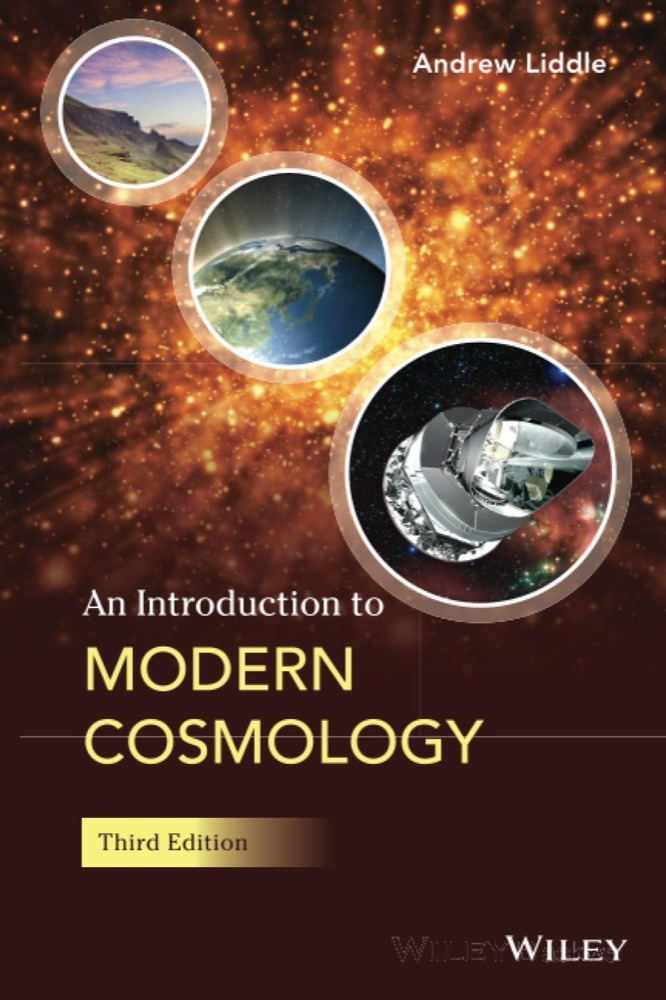
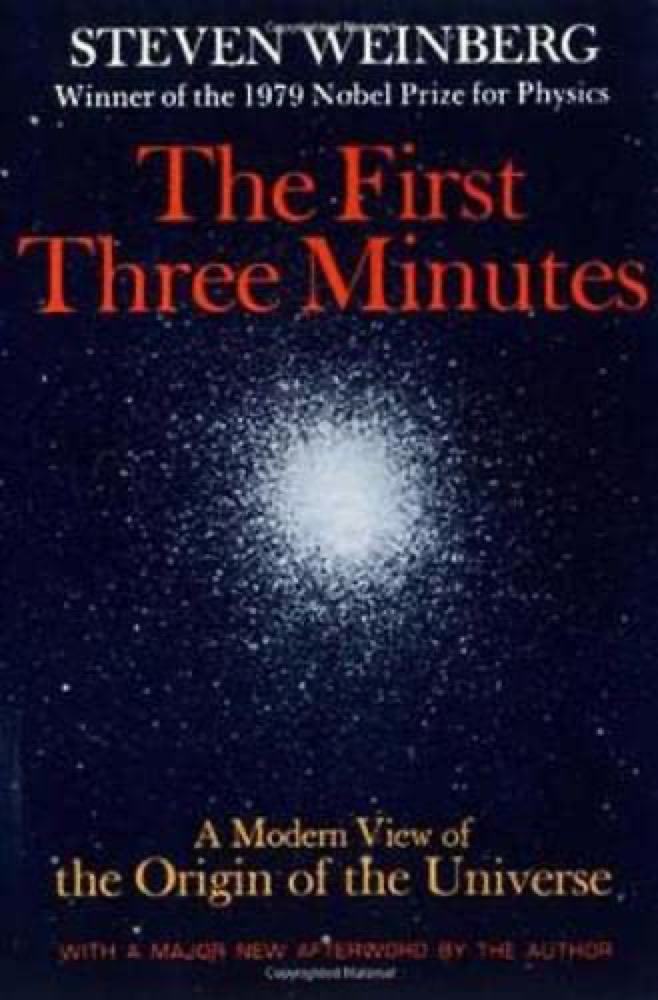
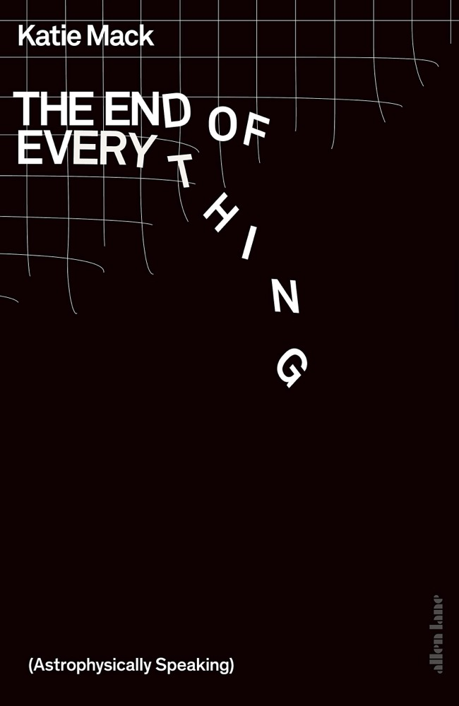
History of Cosmology
Every cosmology was an attempt to explain what people observed.
Egyptian
Seen: desert plains stretching away from the Nile valley, and the blue sky overhead.
Model: a flat Earth (the god Geb) covered by a solid dome (the sky goddess Nut); the sun god Ra carries the disk of the Sun from east to west.
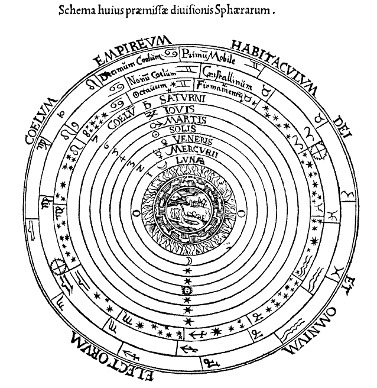
Greek (Aristotle, Ptolemy)
Seen: the Earth and Moon are spherical; the Sun is much farther away than the Moon; the stars are much farther away than the Earth's diameter.
Model: the "two-sphere" model: a spherical Earth inside a much larger celestial sphere carrying the stars; Sun, Moon and planets move on epicycles in between.
More historical Cosmologies
(Think-Pair-Share)
- Think Which other historical cosmologies do you know? Any culture, any era.
- Pair Introduce yourselves to your neighbour, then discuss your cosmologies.
- Share Tell the class who both of you are, and one interesting cosmology you discussed.
More historical Cosmologies
Today: the hot Big Bang model
Fundamental observation #1
The night sky is dark
Imagine a Universe that is infinite, uniform, transparent, eternal and static. Filled with stars, with a space density $n_*$.
How far, on average, can we look before our line of sight hits a star?
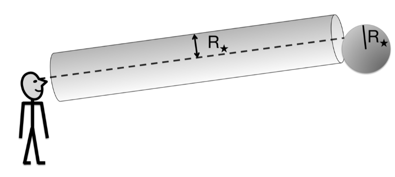
Cylinder of length $\lambda$ around the line of sight:
$V = \lambda \pi R_*^2$
Stars inside it: $N = n_* V = n_* \lambda \pi R_*^2$.
One star is enough to block the view: $N = 1$
$$\lambda = \frac{1}{n_* \pi R_*^2}$$
With $n_* \sim 10^9\,\mathrm{Mpc^{-3}}$ and $\pi R_*^2 \sim \pi R_\odot^2 \sim 10^{-27}\,\mathrm{Mpc^2}$: $$\lambda \sim 10^{18}\,\mathrm{Mpc}$$ Very large (about $3\times10^{19}$ times the diameter of our Galaxy), but finite.
Try it: how far must we see?
Each point of this sky is one line of sight. It lights up if it meets a star closer than the distance $D$ we can see.
This is Olbers' paradox (Heinrich Olbers, 1823): in an infinite, eternal universe full of stars, every line of sight ends on a star, so the night sky should be as bright as the surface of a star.
Fraction of the sky covered by stars: $F = 1 - e^{-D/\lambda} \approx D/\lambda$ when $D \ll \lambda$.
The night sky is dark
But distant stars look faint: is a sky full of distant stars still bright?
The surface brightness $\Sigma_*$ of a star is the flux arriving from it, per angular area.
Flux from a star of luminosity $L_*$ at distance $r$: $f_* = \dfrac{L_*}{4\pi r^2}$
Angular area of the star (in steradians): $\Omega_* = \dfrac{\pi R_*^2}{r^2}$
$\Sigma_* = \dfrac{f_*}{\Omega_*} = \dfrac{L_*}{4\pi^2 R_*^2}$, independent of distance
Think-Pair-Share
Which assumption must we drop to solve Olbers’ paradox?
Think alone, discuss with your neighbour, then share.
Infinite in size
Possible, but not the answer. If stars only fill a region of size $r_{\rm max} \ll \lambda$, only a fraction $F \sim r_{\rm max}/\lambda$ of the sky is covered. But we do not need this: even an infinite universe has a dark sky if it has a finite age.
Uniform stars everywhere
No. On large scales the Universe is homogeneous and isotropic (the next observation), so the stars cannot hide in clumps.
Transparent nothing in the way
No. Olbers' own idea: dust absorbs the starlight. But the dust heats up until it glows as brightly as the stars.
Eternal infinitely old
Yes, the main reason. The Universe has a finite age $t_0$, so we only see stars out to $r \sim c t_0$ (the horizon); their light has not reached us from farther. Then $F \sim c t_0/\lambda$: with $c t_0 \approx 4000$ Mpc, $D/\lambda \approx 4\times10^{-15}$. Try that on the slider!
Static not expanding
Partly. In an expanding universe the surface brightness of distant sources is lower than in a static one. This helps, but the finite age matters most.
Fundamental observation #2
The universe is isotropic and homogeneous
What do isotropic and homogeneous mean?
Isotropic: no preferred direction. It looks the same whichever way you look.
Homogeneous: no preferred location. It looks the same wherever you are.
Example: still water. It looks the same everywhere and in every direction, but only on scales much larger than a molecule (0.3 nm). Up close it is lumpy.
Which of these is homogeneous? Which is isotropic?
The universe is isotropic and homogeneous?
Zoom out: is there still a preferred direction?
| Scale | Preferred direction | |
|---|---|---|
| Earth ~104 km | “down”, towards the centre of the Earth | |
| Stars (Pleiades) ~10 pc | towards the nearest bright stars (the Sun, for us) | |
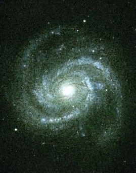 | A galaxy ~30 kpc | towards the centre and along the disc (the Milky Way band) |
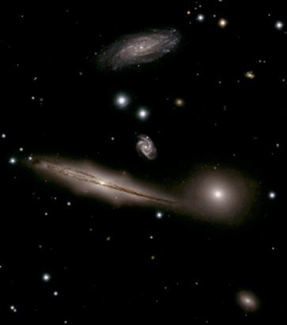 | Group of galaxies ~1–3 Mpc | towards the big members (for us: M31 in the Local Group) |
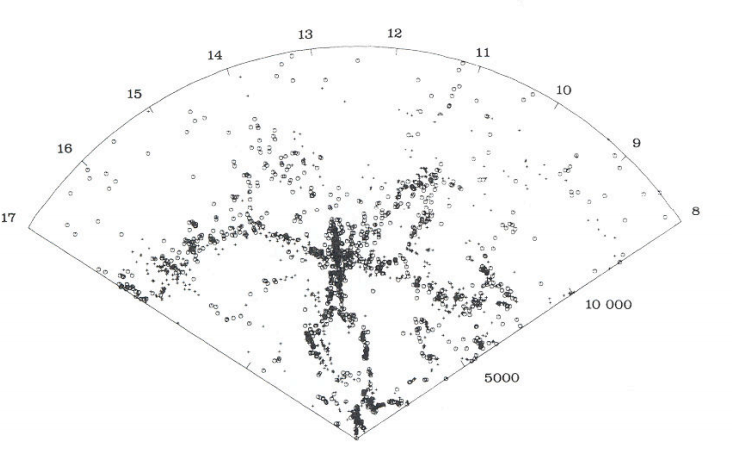 | Galaxy survey ~200 Mpc | none: clusters, filaments and voids, the same pattern everywhere |
Try it: how big must the sphere be?
A toy map of clustered galaxies, 1000 Mpc across. We count galaxies in 40 circles placed at random.
How big must the circles be before they differ by less than 10%?
Small circles: the counts differ wildly (clusters vs. empty space). Large circles: every circle holds about the same number, so the map is homogeneous.
A galaxy survey: 2dFGRS
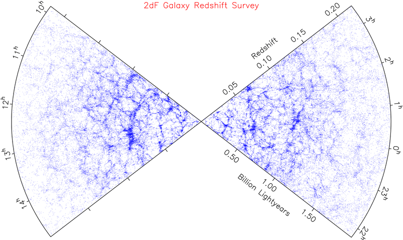
≈ 220 Mpc ≈ 430 Mpc ≈ 640 Mpc ≈ 840 MpcWe cannot observe the Universe from any location.
Isotropic around us + Copernican principle → isotropic around every point → homogeneous.
This is the cosmological principle.
Fundamental observation #3
The Universe contains an isotropic background of microwave radiation (CMB)
Famously discovered by Penzias & Wilson in 1965, awarded Nobel Prize in 1978.
Extremely well described by a blackbody spectrum, with a temperature $T = 2.7255\,\mathrm{K}$.
Implies that the universe started in a hot, dense state.
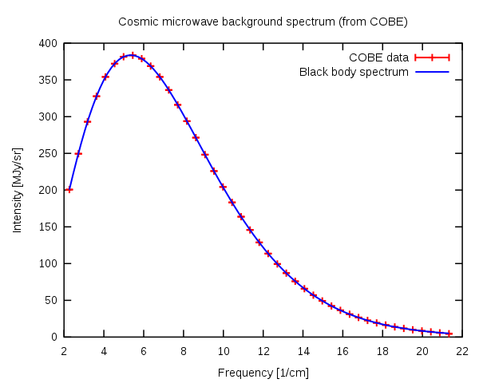
Will be discussed in more detail in Chapter 8
Fundamental observation #4
Proportions of light elements
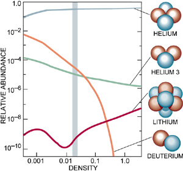
In line with predictions from Big Bang Nucleosynthesis; to be discussed in detail in Chapter 9
Fundamental observation #5
Galaxies are receding from each other, with a velocity proportional to their distance

Hubble’s original diagram from 1929.
We will discuss this observation and its implications in detail in the next lecture!
All of these observations are naturally explained in the Hot Big Bang Model
Before next time
- Visit the Canvas site. Make sure you can find the documents in the "Modules" section
- Get the book (if you haven’t already), and read Chapters 1+2
- Read the instructions for the literature assignment, and let me know if you have any questions